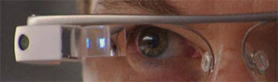
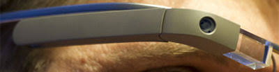

De acordo com fontes próximas do Google, os hóculos vão contar com uma pequena tela de LCD ou AMOLED na parte superior e em frente aos olhos do usuário. Com o uso de uma câmera ou GPS, você pode se situar, assim como selecioar opçõs com o movimento da cabeça.
Com o Google Glass será possível tirar fotos com até 5 megapixel e gravar vídeos com 720 linhas de resolução. Os primeiros vídeos e fotos capturados com o cabeçalho já começaram a circular pela rede, mas até agora ninguém tem muitas informações técnicas.
Quem pensa que para comandar o Google Glass vai precisar de teclado e mouse, se engana redondamente. O dispositívo vem com vários tipos de sensores e microfones embutidos. Assim, para dar um comando, basta falar ou passar o dedo na lateral do hóculos.
Segundo a própria Google, o Glass virá com uma ateria que tem autonomia suficiente para durar um dia inteiro Apenas algumas atividades com video conferências e longas filmagens vão exigir um pouco mais. Alé disso ele vem com wiFi, Bluetoo, 3G/4G e muito mais.